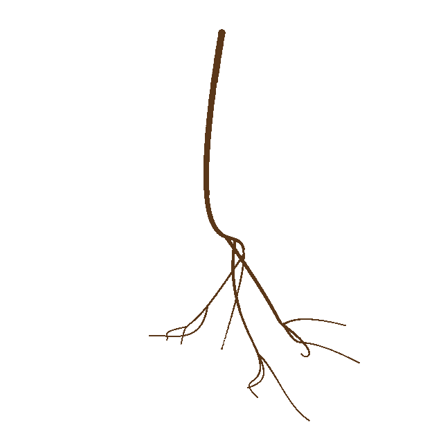
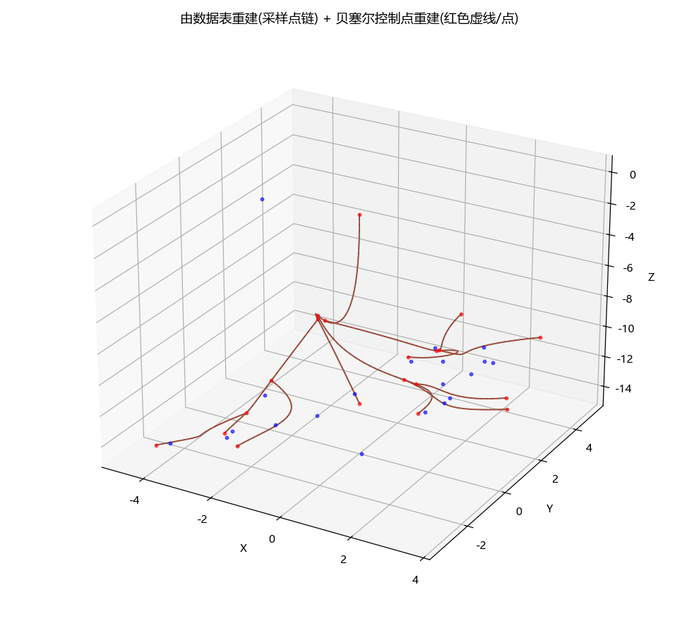
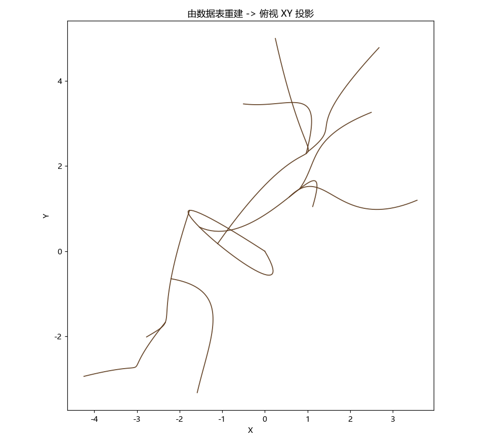
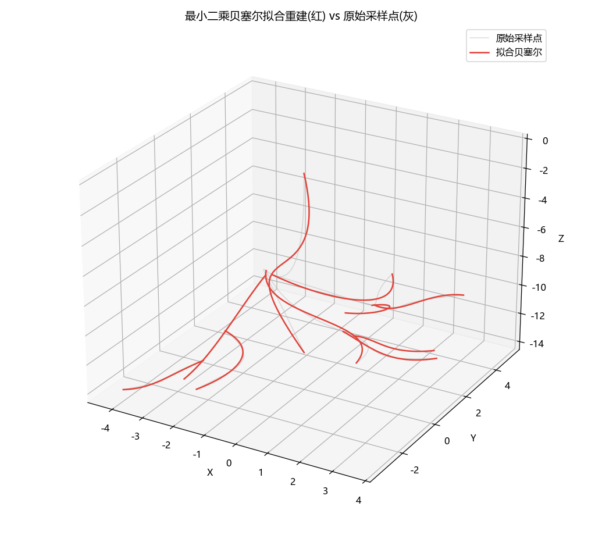

0. 整套流程
plantroot06.m 贝塞尔树状根系：连续曲线 24 视角渲染 + 模型→表→还原（精度 0.0004%）。
渲染：自定义针孔相机 + z-buffer，把每条根渲染成连续带粗细的曲线，15°一张共 24 视角。
节点图结构：每条根的起点/终点都锚定在分支点/末端点节点上，曲线空间位置由节点唯一固定。
链路一（模型 → 表 → 还原）：移植 matlab 算法生成三维模型 → 转成根表（节点行+曲线行）→ 由表拆四控制点 / 最小二乘贝塞尔重建，误差近零。
节点图结构：每条根的起点/终点都锚定在分支点/末端点节点上，曲线空间位置由节点唯一固定。
链路一（模型 → 表 → 还原）：移植 matlab 算法生成三维模型 → 转成根表（节点行+曲线行）→ 由表拆四控制点 / 最小二乘贝塞尔重建，误差近零。
1. 连续曲线渲染（15°一张，共 24 视角）
正确根形态：主根从地表唯一顶点向下扎，侧根从主根向下/横向分出。views_cont/

2. 链路一：模型 → 表 → 还原
有模型几何，把模型转成根表，再用表里四控制点或最小二乘贝塞尔拟合重建，误差近零（相对 0.0004%）。
同一视角并排对比：左=原模型连续渲染，右=最小二乘贝塞尔拟合重建连续渲染，两者几乎一致。



3. 图 → 表 → 贝塞尔重建（24 张连续曲线图 / 15°·张）
24 张图：匹配每段曲线的端点+中间点，颜色特征匹配 → 三角化 → 空间坐标表 → 反解高阶贝塞尔控制点重建。views_pts4/
流程：① 24 台相机，每段曲线取 12 个曲线上点（起点+中间+终点，共120点），每点唯一颜色 → ② 每视角按最近颜色定位 2D 点 → ③ 按颜色跨视角配对，多视角 DLT 三角化（120/120 成功）→ ④ 记录空间坐标表 reconstructed_points.csv → ⑤ 每段用曲线上点反解出 5 次贝塞尔的控制点(6个)，一条平滑贝塞尔重建 → 写 control_points.csv（每条曲线的端点+控制点定义）。
① 空间坐标表 reconstructed_points.csv（三角化出的曲线上点，每条曲线 起点/中间点/终点）
② 贝塞尔定义点表 control_points.csv（每条曲线反解出的 端点 + 控制点）
说明：control_points.csv 里每条曲线记录 6 个点（2 端点 + 4 控制点）。高阶贝塞尔的中间控制点数值发散属正常（它们不在曲线上、由最小二乘反解），曲线本身仍精确穿过测点并贴合原模型。
生成脚本
对应命令（在项目根目录运行）
① 连续曲线渲染（24 视角，15°/张）：python render_all_views.py
② 图 → 表 → 贝塞尔重建：python build_table_from_images.py（产出 reconstructed_points.csv 空间坐标表 + control_points.csv 控制点表）
③ 原模型 vs 重建并排对比：python render_rebuilt_compare.py
④ 链路一：模型 → 表 → 还原：python make_table.py · python fit_and_rebuild.py
② 图 → 表 → 贝塞尔重建：python build_table_from_images.py（产出 reconstructed_points.csv 空间坐标表 + control_points.csv 控制点表）
③ 原模型 vs 重建并排对比：python render_rebuilt_compare.py
④ 链路一：模型 → 表 → 还原：python make_table.py · python fit_and_rebuild.py